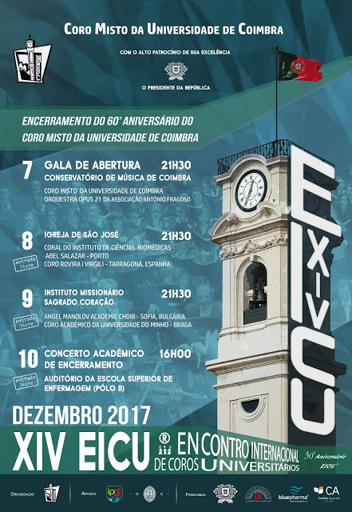

Molt contents d'annunciar que els dies 7, 8, 9 i 10 de desembre participarem al XIV Encontro Internacional de Coros Universitários a la ciutat portuguesa de Coïmbra!
Agraïm al Coro Misto da Universidade de Coimbra la invitació a la Trobada.
Cantarem Nadales, peces de repertori catalanes, portugueses, sacres i nòrdiques.
 Facebook
Facebook Twitter
Twitter